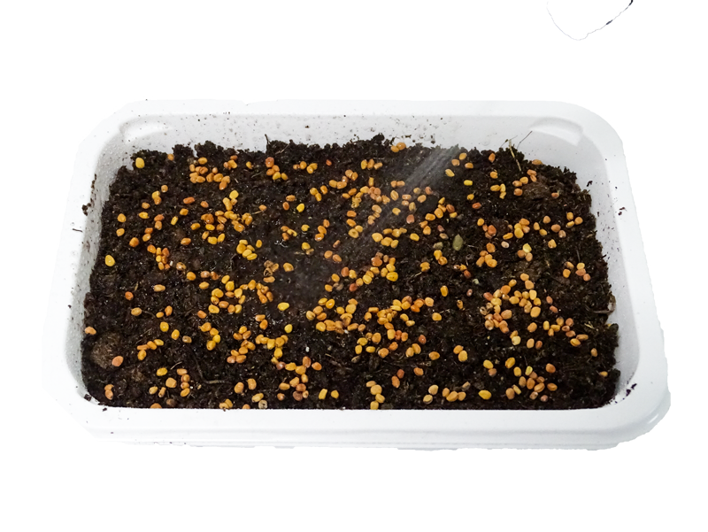
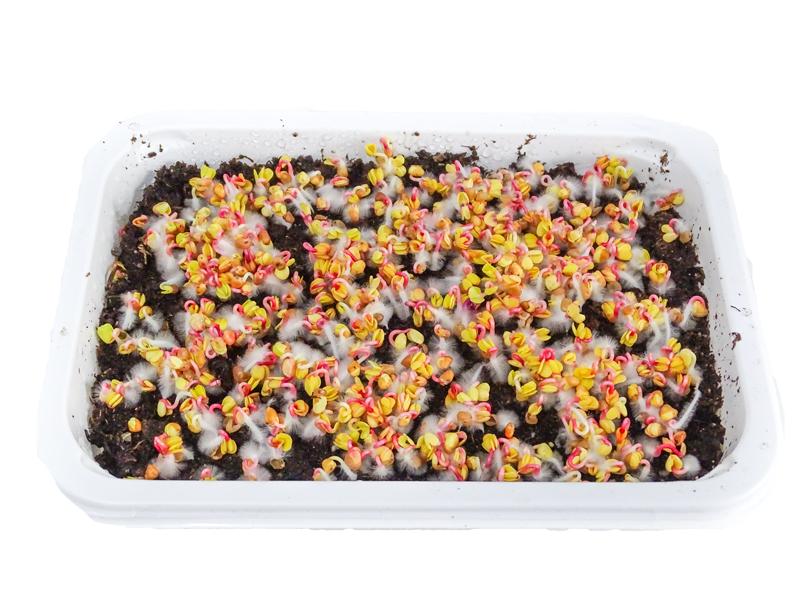
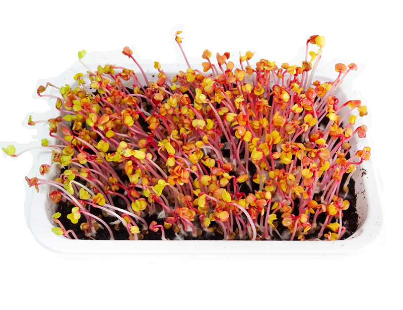
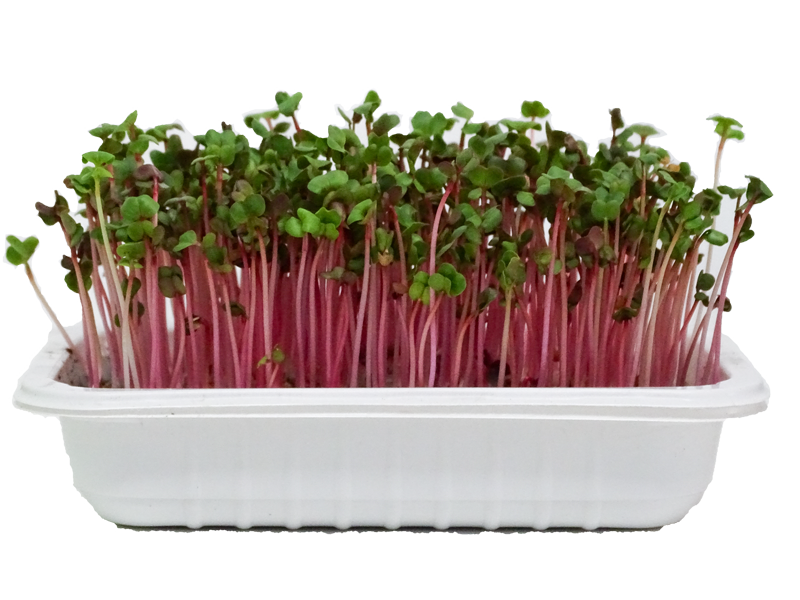

Enjoy growing Microgreens
Growing Microgreens at home brings up multiple benefits: you can eat healthy, you have less stress and anxiety, you are satisfied

Easy to grow in 4 Steps

1. Use the kit and plant the Seeds. Sprinkle it and put it in the dark

2. Get the pot to the light, add bottom watering

3. Water daily, check the soil. Keep it in bright places, at a window

4. Ready to eat. Just harvest with a scissor and make a sandwich.
“ I always thought that growing Microgreens is hard and I was buying them directly from the store. After using this Growing Kit, I found out it is a lot easier, cheaper and tasteful.“
Try now and see for yourself
Add to cart the easiest way to Grow Microgreens!